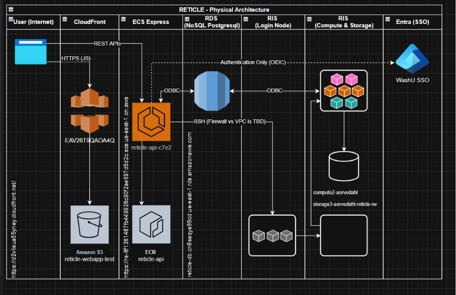

04 — system
A whole screen, compared against every published
screen.
A 25-gene autophagy list, taken through the platform step by
step.
step oneYou hand RETICLE your gene list, and it
tells you what it read.
Drop in a ranked screen, or paste a handful of favourite genes. Unpublished
screens stay in your WashU session unless you choose to contribute them.
step twoYou say what your screen was, and how
much of the corpus to compare it against.
The modality matters — a knockout screen and an activation screen mean
opposite things. Everything RETICLE guessed is marked, so you can correct it before anything is
compared.
step threePublished screens probing biology like
yours, and the pathways behind them.
Every match shows the biology it shares with your screen, and links
straight out to the paper. The pathways come back from the gene list alone — autophagy, mitophagy,
macroautophagy.
4.1 — architectureRIS builds the corpus. AWS
serves it.
The offline/online split is the master architecture fact. WashU RIS
(SLURM, GPU and CPU partitions) runs the ETL that harmonizes the corpus; AWS serves it. React and
React Native Web on the front end, a FastAPI service on ECS Fargate, a PostgreSQL warehouse on RDS,
S3 and CloudFront for the web build, Secrets Manager and KMS for credentials, and WashU Entra SSO
for access.

system architecture
midterm_assets/reticle_architecture.png
4.2 — statusWhat is deployed, and what is
still a prototype.
built and deployed
- React + React Native Web application shell, with WashU Entra SSO
- FastAPI service, containerised and running on ECS Fargate
- PostgreSQL data warehouse and its versioned migrations
- HPC ETL pipeline on WashU RIS (SLURM, split GPU dedup → CPU load)
- CI/CD to ECR/ECS and S3/CloudFront, with Secrets Manager and KMS
reference prototype, being productionised
- Harmonization rules and the directionality fixes
- The co-essentiality matrix and the mutual-best-match network
- Darkness scoring and the grounded LLM reading
- Currently running against SQLite in
prototype/, being ported into the
production warehouse and service
The science above is real and validated, but a substantial
part of it still lives in the reference implementation rather than the deployed service.
RETICLE today is a working prototype and a hypothesis-generating tool, not a finished
instrument.
4.3 — costThe whole platform runs for $37 a
month.
API containerECS Fargate · 0.25 vCPU · 512 MB · always on
$9.01
DatabaseRDS · 28.2M harmonized measurements
$12.41
Web hosting, secrets, imagesS3 + CloudFront · Secrets Manager · KMS · ECR
$4.40
About $450 a year — list price, from the deployed
configuration. The pipeline that built the corpus ran on WashU RIS and is already paid for.
Compute was never the constraint.
4.4 — what it would takeRunning it is cheap.
Growing it is the ask.
next 9 months
$20–50k
institutional support, through DI2
five years
$5M
NIH Transformative Research Award
beyond
open-ended
commercialization, growing from there
None of this is secured. These are the mechanisms that
fit each stage, drawn to scale.